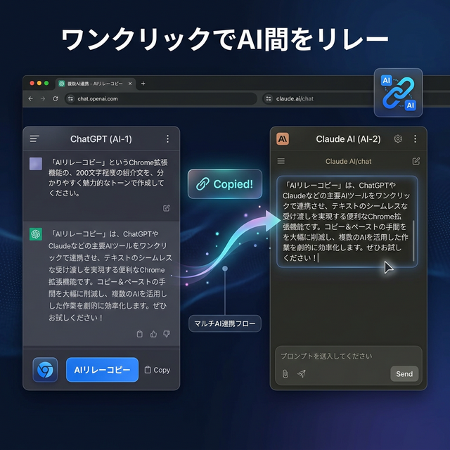
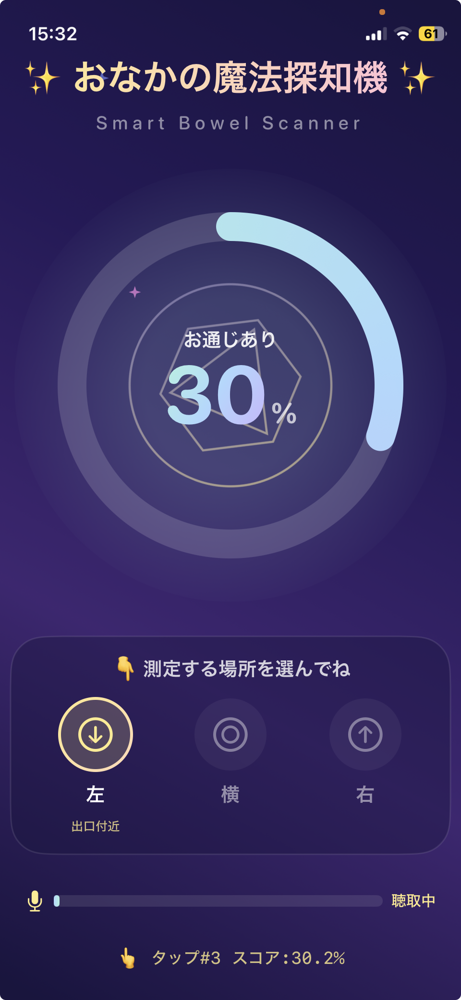
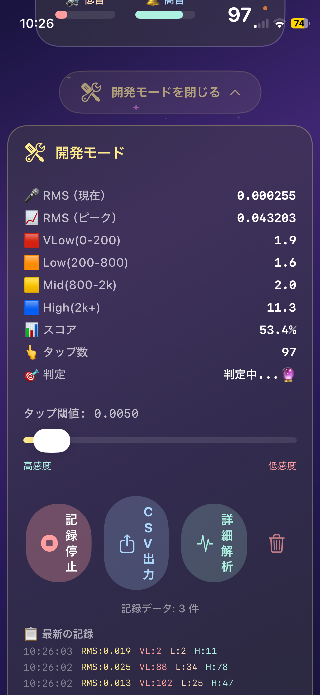

ポートフォリオ
開発したツール・サービスの一覧です。Chrome拡張機能からiOSアプリ、Webサービスまで幅広く開発しています。

日本高配当株ポートフォリオ管理サイト
独自のスコアリングシステムで高配当株を評価・分析。ポートフォリオ全体のリスク分散度・配当カレンダー・セクター比率を視覚化し、投資判断を強力にサポートするWebサービスです。


複数AI連携 - AIリレーコピー
ChatGPT・Claude・Gemini・Grok・Manusに対応（NotebookLMは対応予定）。ワンクリックで直近のプロンプトと結果をコピーし、別のAIにそのまま貼り付けてリレーできるChrome拡張ツールです。
📌 近日Chromeウェブストアで公開予定

脊髄損傷向け お通じ判定モバイルアプリ
脊髄損傷者の日常的な課題に着目し開発中のiOSアプリ。マイク（聴診器）でおなかの音を拾い、周波数スペクトル解析でお通じの状態を判定。部位選択（左・横・右）による計測位置の指定、CSV出力による記録・分析にも対応しています。

🔧 データを取って、アルゴリズム改善中
Google AI検索 - 右クリックで「とは」検索
Webページ上のテキストを選択して右クリックするだけで、「〜とは」をGoogle AI検索モードで即座にシークレット検索できる拡張ツールです。履歴を残さず、最小権限で安心。